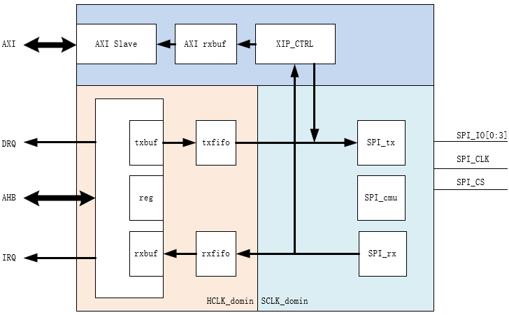

模块介绍
9 Apr 2025
Read time: 1 minute(s)
术语 |
定义 |
注释说明 |
|---|---|---|
XIP |
eXecute In Place |
芯片内执行 |
QSPI |
Quad Serial Peripheral Interface |
4 线 DATA 传输，串行外设接口 |
功能特性
-
支持 XIP 执行程序，节省内存空间
-
支持 XIP 数据访问，实现快速启动
原理框图

使用说明
要实现
XIP 执行程序功能，在 BootLoader
阶段需要完成以下步骤：
- 在寄存器中使能
XIP
功能。
确保处理器支持 XIP 启动功能。
- 配置 NOR Flash 控制器以支持 XIP 模式，包括设置适当的时序参数、地址映射和访问权限等。
- 将 BootLoader 启动代码复制到 NOR Flash 的特定区域。
- 在 BootLoader 中进行必要的系统初始化操作。
- 一旦系统初始化完成，BootLoader 会将控制权转移到 NOR Flash 中的代码，从而开始执行 RTOS 和 FS。